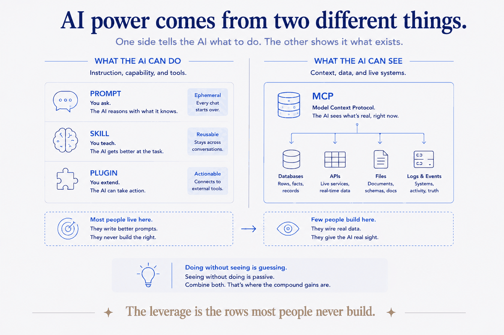

Four tools, one question
When you want the AI to do something, you're really choosing between four things. They're not competitors — they're a ladder, and the rung you want depends on one question: how often will I need this, and does it touch my real data?
- A prompt — you type the instruction, right now, in the conversation.
- A skill — you save the procedure once; the AI runs it on command, the same way every time.
- A plugin — you bundle skills (and more) to share across projects or with a team.
- An MCP server — you connect the AI to a live data source or system it can see and query.
Two of these are about what the AI can do (prompts, skills). Two are about distribution and reach (plugins) and about what the AI can see (MCP). Get the axes right and the choice makes itself.
Prompt: the right tool for the one-off
A prompt is perfect when you'll do the thing once. "Rewrite this paragraph." "What's wrong with this query?" "Summarize this thread." There's no procedure worth saving, no repetition to amortize. Typing it is faster than filing it.
The failure mode is using a prompt for something you do every week. If you've pasted roughly the same instruction three times, you've diagnosed a skill. The third repetition is the signal — stop paying the tax and write the file.
Rule of thumb: Done once → prompt. Done repeatedly → skill.
Skill: the right tool for the repeated procedure
A skill is what a prompt becomes when it stops being a one-off. It's the unit that compounds (Part 1): written once, owned forever, improved in place. Reach for a skill the moment a procedure has a shape you'd otherwise re-explain — the steps, the constraints, the where-things-go.
The failure mode here is the opposite: overbuilding. Not everything deserves a skill. A procedure you'll run twice a year, with no fixed shape, is fine as a prompt you rewrite. Skills earn their keep through repetition — no repetition, no payoff.
Rule of thumb: A procedure with a stable shape you'd re-explain → skill. A vague thing you'll do rarely → leave it a prompt.
Plugin: the right tool for sharing
A plugin is a distribution mechanism. It bundles one or more skills (plus other machinery) so they can be installed elsewhere — another project, a teammate's setup, a public marketplace. The skill inside a plugin is the same kind of thing you built in Part 2; the plugin is just the box it ships in.
Here's the nuance people miss: you don't need a plugin to use a skill. A single-file skill in your own project works perfectly, forever, un-bundled. Reach for a plugin only when the skill is good enough that someone else should have it, or you want it versioned across many of your own repos. Distribution is the trigger, not usage.
Rule of thumb: Keep it personal → single-file skill. Worth sharing or versioning across projects → promote it to a plugin.
MCP: the right tool for what the AI can see
The first three are all about what the AI can do. MCP is the other axis entirely: what it can see. An MCP server connects the AI to a live system — your calendar, your mail, your CRM, a database — so it can query real, current data instead of guessing or asking you to paste it in.
This is the half most people never build, and it's the half that changes everything. A skill that files a task is useful; a skill that files a task and can check your actual calendar for conflicts is a different category of useful, because it can see. Skills without data sources are a very organized way of working blind.
Rule of thumb: The AI needs to act a certain way → skill. The AI needs to see your real data → MCP.
The map, on one page
| You want to… | Reach for | Because | |---|---|---| | Do a thing once | Prompt | No repetition to amortize | | Repeat a procedure the same way | Skill | Written once, compounds, improves in place | | Share a skill / version it across repos | Plugin | Distribution box around skills | | Let the AI see your live data | MCP server | Connects it to real systems it can query |
Most people live entirely on the first row — every interaction a fresh prompt — and wonder why the AI never seems to know them or get better. The leverage is on the lower rows: procedures it runs the same way (skills), and real data it can see (MCP). That's the difference between renting ten smart minutes and owning a system that compounds.

Where I actually am on this map
To show the machinery, not just describe it: my own system leans hard on the lower two rows. Dozens of skills for the things I repeat, and a couple of dozen live data sources the AI can see — calendar, mail, CRM, finances, reading, health, travel, messages. Prompts are for genuine one-offs. Plugins, so far, only for the handful of skills worth sharing beyond one repo.
That mix isn't a recommendation to copy the numbers — it's the shape that emerged from years of asking, each time, "will I do this again, and does it need my data?" and letting the answer pick the rung. The map is the same for everyone. Where you land on it is a function of how much you repeat and how much of your real life you want the AI to see.
The recipe ends here. The kitchen is the system.
Across three parts I've given you the whole recipe: what a skill is, how to build one, and how it fits alongside prompts, plugins, and data sources. All of it, freely — because knowing which tool when is exactly the kind of thing that should be common knowledge, not a paywall.
And here's where I'll be straight with you, one more time. The recipe is the easy half. Anyone can learn that a repeated procedure wants a skill and live data wants an MCP server. The hard half — the kitchen — is designing a whole system where dozens of skills and dozens of data sources actually hold together: where the skills stand on consistent conventions, the data sources feed the right structure, nothing collides, and the whole thing compounds instead of turning into a sprawl of half-overlapping tools. That's not a template you download. It's an architecture you design for a specific world — your life, or your organization's.
That design is what I do. The recipe I'll give away all day. Building the kitchen — the structured system, tuned to how you actually work, so the AI stops resetting to zero and starts compounding — is the part worth sitting down together for.
Next, and last in the series: the payoff. Taking the messiest pile you own — years of AI chat history exported from ChatGPT and Claude — and bringing it under structure with a skill that does the filing. Watch a heap become an asset.